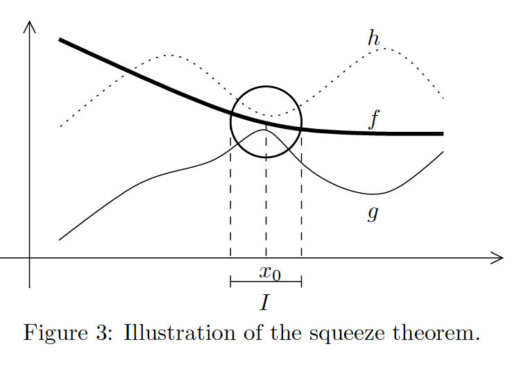
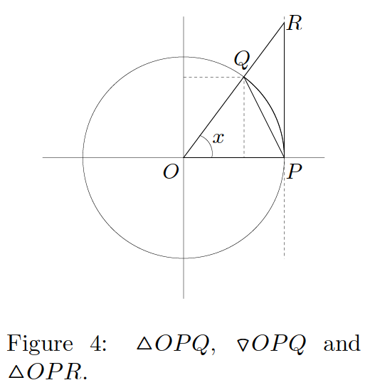

9 Limits
9.1 Continuity at one point
Reference: Hass, Heil, and Weir (2018)
If \(P(x)\) is continuous at \(x = c\), i.e., \(\lim \limits_{x \to c^{-}} f(x) = \lim \limits_{x \to c^{+}} f(x)\), then \(\lim \limits_{x \to c} f(x) = f(c)\).
9.2 General laws
Reference: Hass, Heil, and Weir (2018)
If \(L\), \(M\), \(c\), and \(k\) are real numbers and
\(\lim \limits_{x \to c} f(x) = L\) and \(\lim \limits_{x \to c} g(x) = M\), then
Sum rule: \(\lim \limits_{x \to c} [f(x) + g(x)] = L + M = \lim \limits_{x \to c} f(x) + \lim \limits_{x \to c} g(x)\)
Example: \(\lim \limits_{x \to 1} [x^{2} + 3x^{3}] = \lim \limits_{x \to 1} x^{2} + \lim \limits_{x \to 1} 3x^{3} = 1 + 3 = 4\)
Difference rule: \(\lim \limits_{x \to c} [f(x) - g(x)] = L - M = \lim \limits_{x \to c} f(x) - \lim \limits_{x \to c} g(x)\)
Product rule: \(\lim \limits_{x \to c} [f(x) \times g(x)] = L \times M = \lim \limits_{x \to c} f(x) \times \lim \limits_{x \to c} g(x)\)
Constant multiple rule: \(\lim \limits_{x \to c} (k \times f(x)) = k \times L = k \times \lim \limits_{x \to c} f(x)\)
Quotient rule: \(\lim \limits_{x \to c} \cfrac{f(x)}{g(x)} = \cfrac{L}{M} = \cfrac{\lim \limits_{x \to c} f(x)}{\lim \limits_{x \to c} g(x)}\), \(M \neq 0\), \(\lim \limits_{x \to c} g(x) \neq 0\)
9.3 Infinite limit of rational functions
Reference: Hase (2022)
\[\lim \limits_{x \pm \infty} \cfrac{P_{n}(x)}{Q_{m}(x)} = \lim \limits_{x \pm \infty} \cfrac{a_{n}x^{n} + a_{n - 1}x^{n - 1} \cdots + a_{1}x + a_{0}}{b_{m}x^{m} + b_{m - 1}x^{m - 1} \cdots + b_{1}x + b_{0}} = \lim \limits_{x \pm \infty} \cfrac{x^{n} (a_{n} + \frac{a_{n - 1}}{x} \cdots + \frac{a_{1}}{x^{n - 1}} + \frac{a_{0}}{x^{n}})}{x^{m} (b_{m} + \frac{b_{m - 1}}{x} \cdots + \frac{b_{1}}{x^{m - 1}} + \frac{b_{0}}{x^{m}})}\]
\(n = m\): in this case, the largest term of the numerator (\(a_{n}x^{n}\)) is of the same order of magnitude with the largest term of the denominator (\(b_{m}x^{m} = b_{n}x^{n}\)), and the limit converges to \(\cfrac{a_{n}}{b_n}\).
\(n < m\): n this case, the denominator is much larger than the numerator, and the limit converges to zero.
\(n > m\): in this case, one should analyze the sign of the dominant term of the limit, which is \(\cfrac{a_{n}}{b_m} x^{n - m}\). If \(\cfrac{a_{n}}{b_m} x^{n - m} > 0\) when \(x \to \pm \infty\), then \(\lim \limits_{x \pm \infty} \cfrac{P_{n}(x)}{Q_{m}(x)} \to \infty\). On the other hand, if \(\cfrac{a_{n}}{b_m} x^{n - m} < 0\), when \(x \to \pm \infty\), then \(\lim \limits_{x \pm \infty} \cfrac{P_{n}(x)}{Q_{m}(x)} \to - \infty\)
9.4 Squeeze theorem (or sandwich theorem)
Reference: Hase (2022)
For an interval \(I \subset \mathbb{R}\), assume that \(g(x) \leq f(x) \leq h(x)\) with \(x \in I\). Given \(x_{0} \in I\), if
\[\lim \limits_{x \to x_{0}} g(x) = \lim \limits_{x \to x_{0}} h(x) = L \ \text{, then} \ \lim \limits_{x \to x_{0}} f(x) = L\].

9.5 The fundamental limit
Reference: Hase (2022)

Denote by \(S_{\triangle OPQ}\), \(S_{\triangle OPR}\), and \(S_{\sector OPQ}\), respectively, the areas of the triangles \(OPQ\), \(OPR\) and the circular section \(OPQ\), as in figure 4. Let \(r\) be the radius of the disk. It is straightforward that
\[S_{\triangle OPQ} \leq S_{\sector OPQ} \leq S_{\triangle OPR}\]
Since \(S_{\triangle OPQ} = \cfrac{r^{2} \sin x}{2}\), \(S_{\sector OPQ} = \cfrac{r^{2} x}{2}\), and \(S_{\triangle OPR} = \cfrac{r^{2} \tan x}{2}\), the above inequality implies
\[\sin x \leq x \leq \tan x \ \ \ \ \ \text{or} \ \ \ \ \ \cos x \leq \cfrac{\sin x}{x} \leq 1\]
Therefore, since \(\lim \limits_{x \to 0} \cos x = 1\) from the squeeze theorem, it follows that
\[\lim \limits_{x \to 0} \cfrac{\sin x}{x} = 1\]
One should be aware that this fundamental limit is valid when the angle \(x\) is measured in radians. If \(x\) is measured in degree, one would have \(S_{\sector OPQ} = \cfrac{r^{2} x}{2} \cfrac{\pi}{180}\), which would have lead to \(\lim \limits_{x \to 0} \cfrac{\sin x}{x} = \cfrac{\pi}{180}\).
9.6 Other properties
Reference: Morettin, Hazzan, and Oliveira Bussab (2003) | Só Matemática (n.d.) | Ventura (n.d.)
\(\lim \limits_{x \to \pi} [3x^{3} \times \cos x] = \lim \limits_{x \to \pi} 3x^{3} \times \lim \limits_{x \to \pi} \cos x = 3\pi ^{3} \times cos \pi = 3 \pi ^{3} \times (-1) = - 3 \pi ^{3}\)
\(\lim \limits_{x \to \pi} [3x^{3} \times \cos x] = \lim \limits_{x \to \pi} 3x^{3} \times \lim \limits_{x \to \pi} \cos x = 3\pi ^{3} \times cos \pi = 3 \pi ^{3} \times (-1) = - 3 \pi ^{3}\)
Example: \(\lim \limits_{x \to 0} \cfrac{\cos x}{x^{2} + 1} = \cfrac{\lim \limits_{x \to 0} \cos x}{\lim \limits_{x \to 0} x^{2} + 1} = \cfrac{\cos 0}{0^{2} + 1} = \cfrac{1}{1} = 1\)
\(\lim \limits_{x \to a} f(x)^{n} = \left( \lim \limits_{x \to a} f(x) \right) ^{n}\), desde que \(n \in \mathbb{N}^{*}\)
Example: \(\lim \limits_{x \to 1} (x^{2} + 3)^{2} = \left[ \lim \limits_{x \to 1} (x^{2} + 3)^{2} \right] = (1 + 3)^{2} = 16\)
\(\lim \limits_{x \to a} \sqrt[n]{f(x)} = \sqrt[n]{\lim \limits_{x \to a} f(x)}\), desde que \(n \in \mathbb{N}^{*}\) e \(f(x) > 0\) (se \(f(x) \leq 0\) \(n\) é ímpar)
\(\lim \limits_{x \to 2} \sqrt{x^{3} + x^{2} - 1} = \sqrt{\lim \limits_{x \to 2} x^{3} + x^{2} - 1} = \sqrt{2^{3} + 2^{2} - 1} = \sqrt{11}\)
\(\lim \limits_{x \to a} (\ln f(x)) = \ln \left[ \lim \limits_{x \to a} f(x) \right]\), desde que \(\lim \limits_{x \to a} f(x) > 0\)
Example: \(\lim \limits_{x \to e} (\ln x^{2}) = \ln \left[ \lim \limits_{x \to e} x^{2} \right] = \ln e^{2} = 2 \ln e = 2 \times 1 = 2\)
\(\lim \limits_{x \to a} \sin (f(x)) = \sin \left( \lim \limits_{x \to a} f(x) \right)\)
Example: \(\lim \limits_{x \to 1} \sin (x^{2} + 3x) = \sin \left[ \lim \limits_{x \to 1} (x^{2} +3x) \right] = \sin 4\)
\(\lim \limits_{x \to a} e^{f(x)} = e^{\lim \limits_{x \to a} f(x)}\)
Example: \(\lim \limits_{x \to 1} e^{x^{2} + 3x} = e^{\lim \limits_{x \to 1} x^{2} +3x} = e^{4}\)
9.7 The l’Hôpital’s rule
Reference: Hase (2022)
Theorem: Let \(f\) and \(g\) be two differentiable functions on an open interval \(I\) and let \(\lim \limits_{x \to a} f(x) = \lim \limits_{x \to a} g(x) = \pm \infty\) or \(0\) (here, \(a \in \mathbb{R} \cup \{+ \infty, -\infty\}\), and \(f\) and \(g\) need not be defined on \(a\)). Furthermore, if \(g′(x) \ne 0\) at \(I ∖ \{a\}\) and \(\lim \limits_{x \to a} \cfrac{f′(x)}{g′(x)}\) exists, then
\[\lim \limits_{x \to a} \cfrac{f(x)}{g(x)} = \lim \limits_{x \to a} \cfrac{f′(x)}{g′(x)}\]